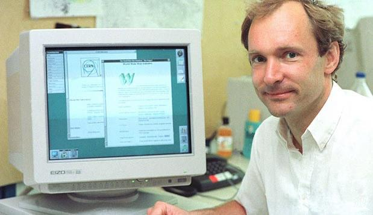
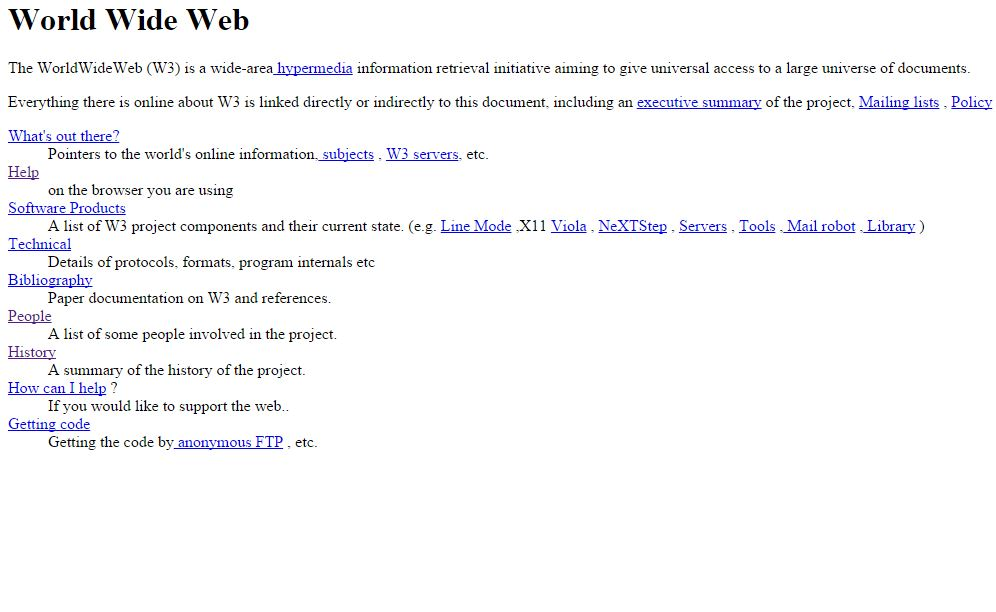

HTML (от англ. HyperText Markup Language — «язык гипертекстовой разметки») — стандартизированный язык разметки веб-страниц во Всемирной паутине. Код HTML интерпретируется браузерами; полученная в результате интерпретации страница отображается на экране монитора компьютера или мобильного устройства. Язык HTML до 5-й версии определялся как приложение SGML (стандартного обобщённого языка разметки по стандарту ISO 8879). Спецификации HTML5 формулируются в терминах DOM (объектной модели документа). Строгим вариантом HTML является XHTML, он наследует синтаксис XML и является приложением языка XML в области разметки гипертекста. HTML-страницы, как правило, открываются браузерами обмениваясь с сервером информацией по протоколу HTTP или HTTPS, в виде простого текста или с использованием шифрования.
Давным давно, практически на заре цивилизации (до 70-х годов XX века), не было интернета. Вообще не было. С появлением компьютеров появилось желание и потребность как-то их объединить, и 4 крупных университета США взялись за эту задачу. Примерно 7 лет прошло от создания концепции до исторического момента: 29 октября 1969 года был проведен сеанс связи между двумя первыми узлами сети ARPANET, на расстоянии в 640 км: в Калифорнийском университете и в Стэнфордском исследовательском институте. Ученый из Лос-Анджелеса подключился удаленно к компьютеру в Стэнфорде. Стэнфордский коллега видел, как появляются на экране символы, введенные на расстоянии, и подтверждал по телефону передачу каждой буковки. Таким образом началась эпоха компьютерных сетей. Долгое время Интернет был предназначен только для специалистов и служил в основном для обмена технической документации и имейлами. Простому пользователю делать там было нечего. И только в начале 90-х прошлого века произошла революция "интернет-народу!"
 Британец Тимоти Джон Бернерс-Ли в Женевском ЦЕРНе изобрел язык гипертекстовой разметки, он же HyperText Markup Language, он же HTML, предназначенный для разметки и оформления документов World Wide Web.Ах да! Еще Сэр Тим разработал глобальный гипертекстовый проект (сейчас Вы его знаете как Всемирную паутину). Собственно, HTML и родился в процессе работы над этим проектом. HTML это наследник SGML, вот только создавался он для того, чтобы им могли пользоваться и люди-неспециалисты в области верстки. Т.е. уже с первых дней у HTML были такие плюсы:Простота - за счет небольшого набора структурных элементов – дескрипторов (они же «теги»). Все теги пишутся в угловых скобках, и несут какую-то смысловую нагрузку. Возможность форматировать документ без привязки к средствам отображения (будь то монитор компьютера, экранчик телефона, или ридер) И как вы уже, наверное, догадались, первый в мире веб-сайт создал тоже Тим Бернерс-Ли И если точная дата изобретения HTML не известна (т.к. это был долгосрочный проект), то день рождения первого сайта очень даже - это было 6 августа 1991 года. Кстати, его можно увидеть и сегодня, правда уже в архиве. Полагаю, все веб-разработчики с полным правом могут считать именно 6 августа своим профессиональным праздником 🙂

В этой версии, из её сорока с копейками тегов уже появилось аж 3 тега, которые намекали на какое-то визуальное оформление документа (например, полужирный курсив). Остальные же теги служили исключительно для логической разметки.
Сэр Тим Бернерс-Ли основал Консорциум Всемирной Паутины (World Wide Web Consortium, W3C). Миссией W3C было, есть и будет "Полностью раскрыть потенциал Всемирной паутины, путём создания протоколов и принципов, гарантирующих долгосрочное развитие Сети... " . Огромная заслуга этих ребят принадлежит в том, что HTML был выпущен с единым базовым набором тегов и атрибутов и веб-страницы стали такими, какими мы их знаем сейчас. Только представьте, в середины девяностых, несколько крупнейших производителей ПО планировали выпустить свои версии HTML со своими названиями тегов. Какая каша была бы сейчас в сфере веб-разработки! Например объявления о работе: «Ищем верстальщика для создания сайтов в Mozilla Firefox», «Срочно требуется верстальщик для Edge», «Нужен верстальщик для Kindle»… словом, спасибо W3C.
Процесс разработки и утверждения новой версии был очень неспешным, а единственным заметным улучшением новой версии стали:
Первый вариант стандарта включал в себя много интересностей, таких как теги для создания таблиц, разметки математических формул, обтекание изображений текстом и др.
Авторы вдруг вспомнили, что по своей идее HTML должен только размечать структуру документа и не должен содержать параметры графических стилей отображения элементов в браузере. При создании HTML 3.0 разработчики ломали голову, как решить нестыковку между идеологией структурной разметки и потребностями пользователей, которых гораздо больше интересовал внешний вид веб-страницы. И чтобы это противоречие не изменило первоначальные свойства HTML, создатели третьей версии решили добавить к ней поддержку нового средства, которое служило для оформления веб-страниц.
CSS (Cascading Style Sheets), а по-русски – иерархические стилевые спецификации. Думаю, понятней не стало?)) Если совсем уж по-русски, то это таблицы стилей, которые присоединяются к документу HTML и служат для визуального оформления тех или иных частей документа.
Итак, система CSS:
А тем временем, в далекой-далекой галактике… Microsoft заметил стремительный взлет компании Netscape на продаже браузеров Navigator и конечно же, не мог стоять в стороне. В MS слегка переработали браузер Mosaic и начали выпускать свои эксплореры, которые поначалу не очень полюбились пользователям (да и не только поначалу;)). В августе 1996 была создана версия Internet Explorer 3.0 Браузер предлагал значительные нововведения на то время и обрел популярность, что поделило рынок браузеров пополам между Netscape Communications и Microsoft. И в это же время Microsoft взял под свою опеку W3C.
В этой версии изрядно подчистили элементы из предыдущих версий. Многие теги были отмечены как устаревшие и не рекомендованные к использованию. Вместо них нужно было использовать таблицы стилей CSS.
Новая версия включала поддержку фреймов, скриптов, общую процедуру внедрения разных объектов. Также в ней были усовершенствованы таблицы и формы, что кроме прочих плюсов обеспечивало большую доступность для людей с физическими недостатками.
Версия HTML 4 была разработана с помощью экспертов в области интернационализации, таким образом стало возможно писать документы на любом языке и легко передавать их по всему миру
2004 год: Швейцарский программист Ян Хиксон (на тот момент разработчик в Opera) и несколько представителей таких компаний как Mozilla, Google и Apple, основал рабочую группу под названием WHATWG (Web Hypertext Application Technology Working Group).
Поводом для создания подобного сообщества стал тот факт, что W3C на тот момент потерял интерес к HTML и занялся развитием XML, а на его основе - расширяемого языка гипертекстовой разметкиXHTML. Не будем углубляться в детали, т.к. на данный момент этот язык перестал развиваться.
Два года W3C и WHAT Working Group работали каждый над своим проектом. Но позже стало видно, что WHAT Working Group достигает каких-то результатов, тогда как XHTML 2 так и не реализовался.
И в 2006 году Тим Бернерс-Ли объявил, что W3C и WHATWG будут вместе работать над дальнейшим развитием HTML.
C этого дня W3C официально рекомендует использовать HTML5.
На данный момент развитие HTML продолжается… W3C выложил в начале июня рабочий черновик версии 5.1. Консорциум просит всех писать свои отзывы и комментарии относительно этой версии, т.к. HTML остается как и раньше проектом, над которым работают одновременно множество неравнодушных людей, любящих угловые скобки.
🔝